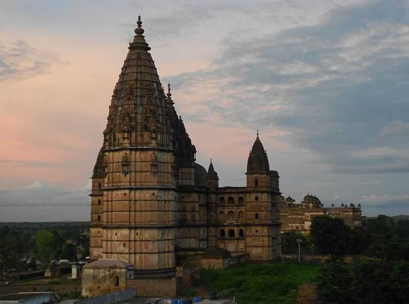
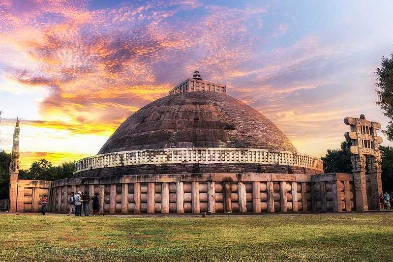
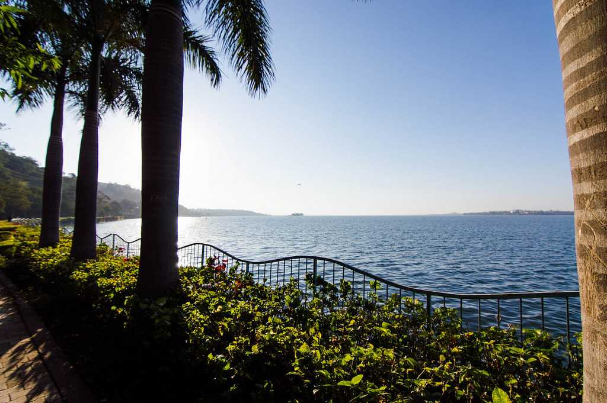
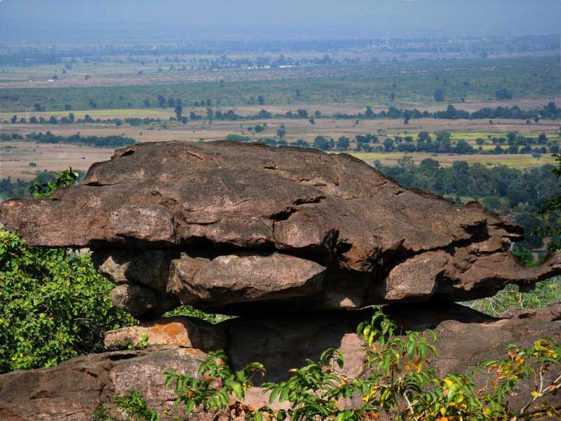

Khajuraho, a UNESCO World Heritage Site located in Madhya Pradesh, is known around the world for its stunning temples adorned by erotic and sensuous carvings. A small town located in the Bundelkhand region, Khajuraho is a brilliant example of Indian architecture and its culture back in the medieval period.
Bhedaghat is known for the Dhuandar Falls (Dhuan means smoke and Dhar means flow), a huge cascade of water that falls from a height of 98 feet. Boating in Bhedaghat especially during the moonlit night would surely make up for an unforgettable experience.
Pachmarhi is the only hill station and is the highest point in Madhya Pradesh. Pachmarhi is also often known as "Satpura ki Rani" or the "Queen of the Satpura Range". Situated at an altitude of 1,067 metres, the picturesque town is a part of UNESCO Biosphere Reserve, home to leopards and bison.
Gwalior is a historic city located in the state of Madhya Pradesh. Popular because of the hilltop fort, Gwalior is full of palaces and glorious temples giving this city a majestic charm which speaks volumes of its glorious past.

Located in a central region of Madhya Pradesh, Kanha National Park is the largest National Park in central India and has been ranked as one of the best parks in Asia. Among the 22 species of large mammals, the royal Bengal tigers are one of the major attractions. One of the best tiger reserves in India, the present-day area stretches over the 940-kilometre square which is divided into two sanctuaries: Hallon and Banjar.

Orchha is a historical town located on the banks of river Betwa in Madhya Pradesh, known for its grand palaces, and intricately carved temples. Famously known as the city of palaces, it is world-renowned for the classic mural paintings, frescos and Chhatris (cenotaphs) that were constructed to commemorate the Bundela rulers.
Stradling the confluence of the rivers Narmada and Kaveri, the holy city of Omkareshwar houses one of the 12 revered Jyotirlingas. Shaped in the form of Hindu religious symbol 'Om', due to the merging of two valleys and a central pool of Narmada waters, it derives its name from 'Omkara' which is just one other name of Lord Shiva.

Located in Madhya Pradesh, the Buddhist monuments of Sanchi are one of the oldest stone structures in India. Designated a World Heritage site by UNESCO, the Great Stupa was installed in the 3rd century BC by Emperor Ashoka of the Mauryan dynasty.
Ujjain, considered to be one of the holiest cities of India, is an ancient city situated on the eastern bank of the Shipra River in the Malwa region of Madhya Pradesh. Ujjain is one of the four sites for the Kumbh Mela, the largest peace-time gathering on the planet that attracts 100 million people to the festival.
Indore is the largest and the most populous city of Madhya Pradesh. Located on the Malwa Plateau, the charm of this city lies in its rich cultural heritage which has been preserved over centuries and along with the hints of urbanisation.

The capital city of Madhya Pradesh, Bhopal is famous for the pair of artificial lakes (Upper Lake and Lower Lake) that split the city. Towards the north of the lakes lie the intriguing old town with rustic mosques, bustling bazaars, serpentine alleys and exquisite havelis. To its south is the new town with swanky infrastructure, shopping complexes and wide roads.

The Bhimbetka rock shelters are an archaeological site, exhibiting the earliest traces of human life on the Indian subcontinent, and thus the beginning of the South Asian Stone Age. It was declared a World Heritage Site in 2003.